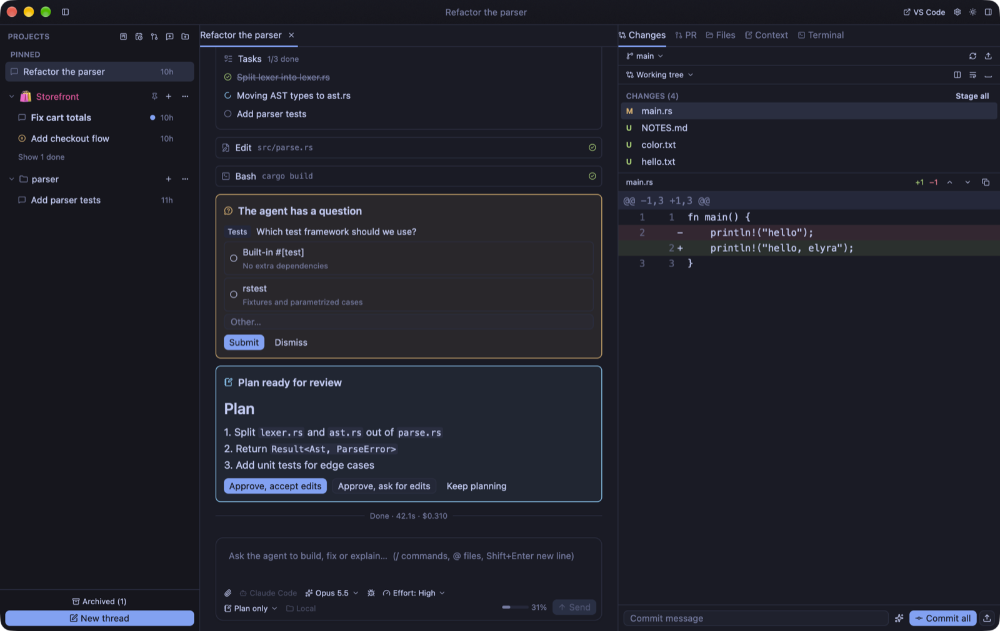

Chapter 2: The First Launch
Freddy downloads the app, opens it, and a dialog tells him which agents it found and what version each one is. This chapter is the ten minutes between that dialog and the first thing an agent does in his project.
The problem
The first run of a tool decides whether you keep it. If an app starts empty, asks you to configure three things before it does anything, and never says whether it can see the tools it depends on, you close it. Workspace's whole first run is designed around one question: can it find an agent?
The hard way
The usual way to find out is to start something and read the
error. “Command not found” tells you the agent is
missing, or installed somewhere your shell knows about and
the app does not. That second case is common: the global
install folder is on the PATH of your terminal
and not of a desktop application.
What you need
- A Mac with Apple Silicon (M1 or later), macOS 12 or later.
git.- At least one coding agent installed and signed in.
These are the agents Workspace knows how to start, and where each one comes from:
| Agent | Install | Sign in |
|---|---|---|
| Claude Code | npm install -g @anthropic-ai/claude-code | run claude and use /login |
| Codex | npm install -g @openai/codex | codex login |
| Elyra | npm install -g @elyracode/coding-agent | run elyra |
| Pi | npm install -g @mariozechner/pi-coding-agent | run pi |
| Gemini CLI | npm install -g @google/gemini-cli | run gemini |
| OpenCode | npm install -g opencode-ai | opencode auth login |
Cursor Agent is supported too (cursor-agent login).
Workspace finds these on your PATH, including the
usual per-user install folders (~/.npm-global/bin,
~/.local/bin, ~/.bun/bin, Homebrew).
If one lives somewhere else, set its path in
Settings → Providers; you can also sign
in from there.
Install
Download the signed, notarized app from the
Elyra Workspace page and drag it
to /Applications. Once it is installed it keeps
itself up to date; chapter 15 says how, and how to go back a
version if an update ever misbehaves. If you would rather build
it yourself, the development
guide covers that: scripts/bundle-macos.sh
produces Elyra Workspace.app, and
cargo run --release runs it without a bundle.
Only one copy of Workspace runs at a time per data folder. If you start a second copy, it exits.
First launch
A welcome dialog lists the supported agents and shows which
ones are installed, with their versions. This is the check you
came for: if the agent you use is listed with a version, the
rest of the course will work. If it is not, fix that first
— the PATH note above is nearly always the
reason. You can also choose a color theme here. Then you choose:
- Add a project: pick a folder. Workspace opens a new thread in it.
-
Start a chat: opens a thread in a scratch
folder (
~/.elyra/chats). Use it for questions that do not belong to a project.
You can add more projects at any time with
⇧⌘O or the folder button in the sidebar.
What you are looking at

A busy window, from a demo project. Take it apart. On the left, PINNED holds a thread you want within reach, and below it the projects and their threads, each with how long ago it was touched. In the middle is the open thread: a task list the agent is working through, the edits and commands it ran as one-line cards, a question it needs answered, and a plan waiting for your decision. On the right is the tools panel with its tabs — Changes, PR, Files, Context, Terminal — showing a diff. Along the bottom is the message box, with the agent, the model, the effort and the permission mode right under it.
You do not need to understand all of it yet. Notice only that the question, the plan and the diff are things you can see, instead of things you have to scroll for.
Your first thread
- Select a project and press
⌘N(New thread). - Below the message box, check the agent, model, effort and permission mode. The defaults are the ones you used last.
- If the project is a Git repository, choose Local or New worktree. Local: the agent works in the project folder itself. New worktree: the agent gets its own copy on its own branch, so several threads can work in parallel without getting in each other's way. Chapter 7 is about that choice.
-
Write what you want and press
Enter.Shift+Enterstarts a new line. - Watch the agent work. Tool calls appear as they run, and edits show as diffs. Depending on the permission mode, the agent may stop and ask for approval.
-
Open the tools panel (
⌥⌘B) to see the Changes the agent made, and the terminal (⌘J).
Freddy's first message is deliberately small: “Read the README and tell me how the export works. Do not change anything.” A question first is a good habit — you learn what the agent understands before it touches a file.
When the agent finishes, the thread's status in the sidebar changes. If you were looking at another thread, you get a notification; if the window was in the background, it is a system notification and the Dock icon shows a badge. That is the first problem from chapter 1, already solved.
Three keys worth learning today
⌘Kopens the command palette: it finds threads, files and commands.⌘/shows every keyboard shortcut.⌘,opens Settings.
⌘K and type the name of
your thread.
What you learned
- What Workspace needs: Apple Silicon, git, and at least one signed-in agent
- That the welcome dialog is the check that your agent was found, and where to fix the path
- How to add a project or start a scratch chat
- The parts of the window, from a real one
- How to start a first thread, and the choice between Local and New worktree